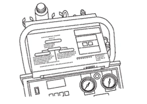
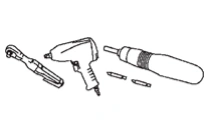
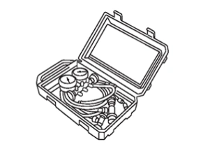
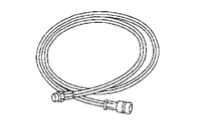
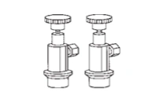
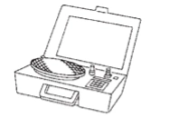
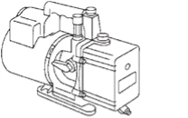

通風、暖氣與空調 - 暖氣與空調系統 - 準備作業<VEHICLES FOR AUSTRALIA AND NEW ZEALAND> - 準備作業
商用服務工具
N5090203V0000I00ENG
HFO-1234yf (R-1234yf) 服務工具與設備
切勿將 HFO-1234yf (R-1234yf) 冷媒及/或其指定潤滑油與 CFC-12 (R-12) 或 HFC-134a (R-134a) 冷媒及/或其潤滑油混合。
處理各類冷媒/潤滑油時，必須使用分開且不可互換的服務設備。
HFO-1234yf (R-1234yf) 與 CFC-12 (R-12) 或 HFC-134a (R-134a) 的冷媒容器接頭、服務軟管接頭及服務設備接頭（處理冷媒及/或潤滑油的設備）各不相同。此為避免冷媒/潤滑油混用。
切勿使用將一種尺寸接頭轉換為另一種尺寸的轉接頭：會造成冷媒/潤滑油污染，並可能導致壓縮機故障。
工具名稱
說明
冷媒識別設備 (R-1234yf)

CF100AT4AA00ENG
用於檢查冷媒純度與系統污染
電動工具

CF100AT5AA00ENG
鬆開螺帽、螺絲及螺栓
歧管壓力錶組（含軟管與接頭）

DF100AT6AA00ENG
識別：
錶面標示 HFO-1234yf (R-1234yf)。
服務軟管
高壓側軟管
低壓側軟管
通用軟管

CF100AT7AA00ENG
軟管顏色：
低壓側軟管：藍色
高壓側軟管：紅色
通用軟管：黃色
服務接頭
高壓側接頭
低壓側接頭

CF100AT8AA00ENG
服務軟管接頭：
M12 x 1.5 接頭為選配或永久固定。
冷媒秤

CF100AT9AA00ENG
用於測量冷媒
接頭尺寸：螺紋尺寸
1/2
″
-16 ACME
真空泵
（含隔離閥）

CF100ATAAA00ENG
接頭尺寸：螺紋尺寸
1/2
″
-16 ACME
已加入書籤
書籤數量過多。
請刪除後重新加入書籤。
×